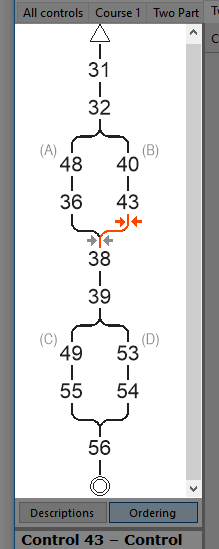

Control Ordering Pane
The control ordering pane is located in the left part of the main window. It is displayed when you press the "Ordering" button on the descriptions/ordering switch. The size of the pane can be adjusted by using the mouse to drag the border that separates it from the map display. If the entire course is not shown, use the scroll bar to move it up or down.

The control ordering pane displays the control codes for the current course, in the order that they will be visited, from top to bottom. It is primarily useful for courses with variations but can be used for any course.
The selected control (if any) is highlighted in red.
You can click on a control code to select that control, or a line to select the leg between two controls.
A red arrow on the control ordering pane will show where a newly created control will be inserted.
You can press the left mouse button down on a control code, keep the mouse button held down, and drag the control code to a new location in the course. This provides an easy way to rearrange controls or move them between branches and loops.
Letters in light gray next to branches show the letter associated with that branch, which are used to identify different variations of the course.